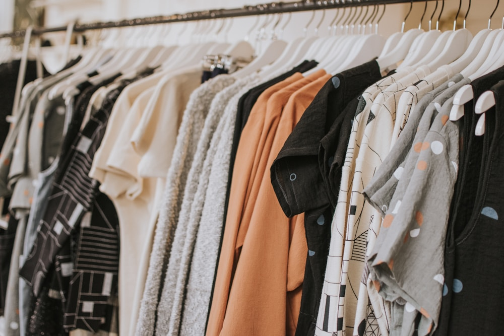

A bespoke 22-momme Mulberry silk dressing gown is not a disposable seasonal garment; it is an heirloom textile designed to provide decades of intimate luxury when properly maintained. Because silk is an organic protein fiber composed of delicate fibroin filaments, it requires mindful maintenance. Harsh commercial alkaline detergents, high-heat clothes dryers, and aggressive hot iron presses can degrade silk's natural sericin coating and cause permanent fiber embrittlement.
At Gloss Robe Peak, we believe that caring for fine silk should be a restorative ritual rather than a chore. By understanding the chemical vulnerabilities of protein fibers and following four foundational care protocols—gentle pH-neutral washing, low-temperature vertical steaming, flat towel drying, and acid-free archival storage—your silk robes will retain their liquid drape, vibrant color, and lustrous pearlescence for a lifetime. In this masterclass, our textile conservators share the official atelier care guide.
1. The Chemistry of pH-Neutral Silk Detergents
Why ordinary laundry detergents destroy natural silk:
- The Danger of Alkaline Enzymes: Standard laundry detergents are formulated with an alkaline pH (9.0–11.0) and contain protease enzymes designed to dissolve protein stains (like blood or egg). Because silk is a pure protein, protease enzymes dissolve the silk fibroin fibers themselves.
- The pH-Neutral Benchmark (pH 6.5–7.0): Silk must be washed exclusively with specialized, enzyme-free, pH-neutral liquid silk washes that clean gently without stripping natural sericin proteins.
- Never Use Bleach or Optical Brighteners: Chlorine bleach dissolves silk fibers instantaneously, while optical brighteners leave yellowing chemical residues on natural Mulberry silk.
“Silk is like fine hair. Treat it with gentle, pH-balanced washes and cool water, and it will reward you with decades of shimmering luster.”
2. Hand-Washing Protocol: The Five-Minute Basin Ritual
The safest method for cleaning luxury silk dressing robes at living space:
- Fill Basin with Cool Water (Below 30°C): Dissolve one capful of specialized silk detergent in cool or lukewarm water. Submerge the robe and gently agitate for three minutes.
- Never Wring or Twist: Wringing wet silk fractures delicate fibroin filaments. Gently squeeze out excess water with your palms.
- The Clean Water Rinse: Rinse thoroughly in fresh cool water until all soap is cleared. Add two drops of organic white vinegar to the final rinse to neutralize residual alkalinity and restore natural sheen.
3. The Towel-Roll Drying Technique
Never hang soaking wet silk on narrow wire hangers:
Lay the freshly rinsed silk robe flat on a clean, dry white cotton bath towel. Roll the towel and robe together into a loose cylinder like a jelly roll, pressing gently to absorb seventy percent of water. Unroll the towel and lay the damp robe flat on a mesh drying rack in a shaded, well-ventilated room away from direct sunlight.
4. Silk Maintenance & Laundering Protocol Comparison Matrix
| Care Method | Thermal & Chemical Safety | Luster & Softness Preservation | Recommended Frequency |
|---|---|---|---|
| Cool Hand Wash with pH-Neutral Wash | ★★★★★ (100% Gentle on Fibroin) | ★★★★★ (Preserves Liquid Satin Drape) | Every 4–6 Wears |
| Professional Eco Dry-Cleaning | ★★★★☆ (Safe Solvents Required) | ★★★★☆ (Crisp Couture Finish) | Seasonal / Bridal Sets |
| Machine Wash with Standard Powder | ★☆☆☆☆ (Enzymes dissolve silk) | ★☆☆☆☆ (Causes pilling & fuzzing) | Strictly Prohibited |
5. Vertical Steaming vs. Flat Ironing
Direct contact with hot metal irons can scorch delicate silk satin, causing shiny burn marks. We recommend vertical garment steaming: hold the steamer nozzle three inches away from the hanging robe, allowing warm steam vapor to relax wrinkles naturally while restoring natural loft and drape.
6. Archival Seasonal Storage in Breathable Muslin
Never store silk garments in sealed plastic dry-cleaning bags, which trap humidity and foster yellowing mildew. Store your robes in unbleached 100% cotton muslin garment bags on wide, padded wooden hangers to maintain shoulder shape.
7. Natural Cedar and Lavender Moth Protection
Clothes moths are naturally attracted to animal protein fibers. Protect your silk wardrobe by placing natural red cedar wood blocks and dried lavender sachets in your wardrobe drawers, refreshing cedar blocks yearly with gentle sanding.
8. Preserve Your Heirloom Robe for Decades
With these simple, mindful care rituals, your Gloss Robe Peak silk dressing gown will remain a treasured sanctuary of comfort, elegance, and beauty for decades to come.
9. Spot Cleaning Protocol for Water Stains
If droplets of clean water leave faint drying rings on silk satin, submerge the entire garment in a lukewarm water basin for two minutes. This equalizes fiber hydration across the entire panel, completely eliminating water marks without chemical spot treatments.
10. Low-Ironing with a Silk Pressing Cloth
If pressing is necessary, turn the robe inside out while slightly damp. Set the iron to the lowest "Silk" temperature setting (below 120°C) and place a clean white silk or cotton pressing cloth between the iron and the robe, pressing with smooth, continuous strokes.
11. An Eternal Covenant of Textile Preservation
At Gloss Robe Peak, our conservation expertise ensures that every silk creation remains an enduring heirloom of personal luxury, passing down comfort, grace, and exquisite beauty from one generation to the next.
12. Micro-Bubble Hand Washing Agitation in Soft Water
Gentle pulsing motions in soft, calcium-free water allow pH-neutral detergents to lift surface oils without rubbing or abrading delicate silk fibroin filaments, preserving the liquid satin sheen across hundreds of washes.
13. Low-Temperature Vertical Steam Relaxation Protocols
Holding a vertical steam wand three inches away from hanging silk allows pure water vapor to relax creased fibers instantly, restoring natural drape and loft without the risk of scorching or shiny iron press marks.
14. The Soulful Ritual of Heirloom Textile Care
Caring mindfully for a 22-momme silk dressing gown transforms laundry into an intimate act of stewardship, ensuring your bespoke robe remains a treasured companion of morning tranquility for decades.
15. The Sovereign Standard of Silk Longevity
At Gloss Robe Peak, our conservation guidelines ensure that every silk robe endures as an heirloom of personal luxury, maintaining its pearlescent luster, fluid drape, and buttery softness for generations.
16. Breathable Cotton Muslin Wardrobe Preservation
Storing fine silk robes inside unbleached cotton muslin garment bags prevents airborne dust accumulation while allowing natural air circulation, protecting delicate protein fibers from humidity stagnation and fiber yellowing.
17. An Everlasting Ode to Silk Loungewear Conservation
Mindful care preserves the living soul of pure Mulberry silk, ensuring that every quiet evening wrapped in its liquid embrace feels just as magical and luxurious as the very first fitting.
18. Archival Tissue Paper Folding Protocols
When packing silk robes for travel or seasonal storage, place sheets of acid-free archival tissue paper between fabric folds. This cushions the fold lines, preventing permanent crease memory in heavy 22-momme satin.
19. The Peaceful Grace of Mindful Garment Stewardship
Taking time to care for fine silk creates an intimate connection with the artisan craft behind your garment, ensuring that every morning wrapped in its soft folds remains an experience of pure serenity.
Frequently Asked Questions on Silk Robe Care

Lucian Sterling
Director of Textile Conservation at Gloss Robe Peak. Lucian previously conserved antique silk vestments for the Victoria & Albert Museum and specializes in historical fiber preservation.